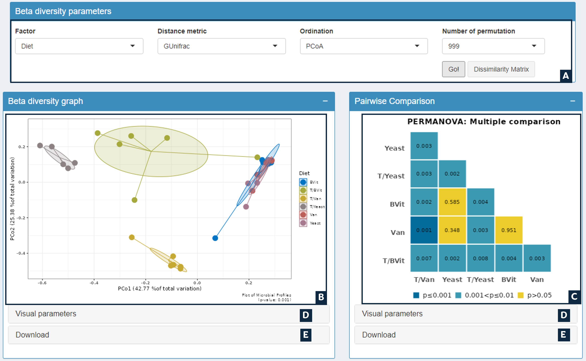

Beta-diversity quantifies the distances between different microbial profiles described by the OTUs table which allows to link the overall taxonomic diversity pattern to the experimental features.
Approches provided ny MetaXplore to calculate distances are:
- GUnifrac: Generalized Unifrac distance1 (recommended) (required phylogenetic tree).
- Weighted: Most sensitive to detect change in abundant lineages (required phylogenetic tree).
- Unweighted: Most efficient in detecting abundance change in rare lineages (required phylogenetic tree).
- VAW Unifrac: Variance-adjusted weighted UniFrac distance is a powerful method when species/OTUs are not uniformly distributed between communities2 (required phylogenetic tree).
- Bray-Curtis: Takes abundance into account and non-phylogeny based.
Visualization of the multidimensional distance matrix in a space of two dimensions is performed by:
- Principal Coordinate Analysis (PCoA)
- Canonical Analysis of Principal coordinate (CAP)
- Multi-Dimensional Scaling (MDS)
- Non-metric Multi-Dimensional Scaling (NMDS)
User Interface

- A: Dynamic Input
- B: Ordination graph
- C: Heatmap of paiwise PERMANOVA test
- D: Customize graphs
- E: Download Current graphs in PDF or PNG format
Options
- Factor: Select factor from the categorial variables in metadata file
- Distance metrics: Choose metrics to calculate the similarity/dissimilarity between the samples
- Ordination: Choose Ordnation method to visualze the calculated distances in two dimenssion
- Permutations: Number of permutations to conduct to assess the significance of the pseudo-F statistic (Default is 999)
- m: In case of CAP analysis the users are allowed to choose the number of axes analysed by discriminant analysis
Output
- Beta diversity graph: Graph of beta diversity based on the selected ditance method and the ordination. The resulted graph is annotated with p-values of the PERMANOVA test indicating the significance of group separations.
- Pairewise Comparison: Pairwise comparisons between groups. This is applied whenever more than two groups exist and the PERMANOVA test across all groups is significant.
- Distance matrix: Dissimilarity matrix calculated across all samples. The table is accessible from show table button.
References
1 Chen, Jun, et al. "Associating microbiome composition with environmental covariates using generalized UniFrac distances." Bioinformatics 28.16 (2012): 2106-2113.
2 Chang, Qin, Yihui Luan, and Fengzhu Sun. "Variance adjusted weighted UniFrac: a powerful beta diversity measure for comparing communities based on phylogeny." BMC bioinformatics 12 (2011): 1-14.